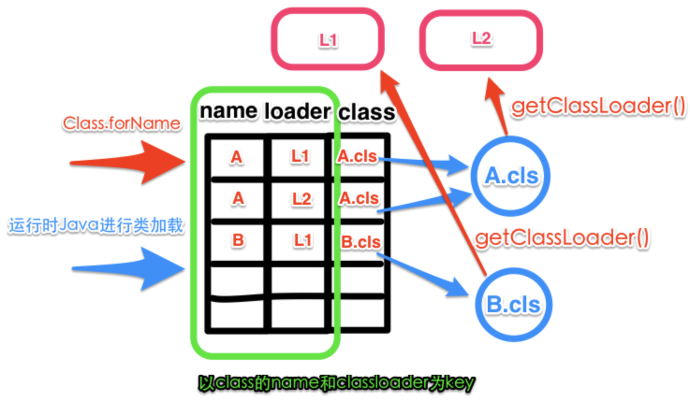

Dubbo中的类管理 和 ClassLoader
作为一个RPC开放框架，Dubbo是非常值得学习的，阿里优秀的IT工程师贡献着宝贵的经验，万丈高楼平地起，复杂的系统离不开一砖一瓦的参与组成，总是由简单的元素通过有机排列组合构建而成的，其中一些辅助构建系统的工具或组件不可或缺，学习他们是快速理解Dubbo源码关键，也能够辅助开发者自身提高 Java编码的基础能力，而其他更加偏顶层的内容则有利于帮助更加快速获知如何实现一个分布式系统的全貌。
这篇文章则结合ClassLoader分析Dubbo中相关的工具代码。
Java基础：ClassLoader
Java中需要利用ClassLoader，将由Java源文件编译得到class字节码文件加载到JVM虚拟机中，JVM并不是一次性加载所需要的全部类的，它是按需延迟加载。 JDK内置的URLClassLoader可以用于加载位于网络上静态文件服务器提供的jar包和class文件。它不但可以加载远程类库，还可以加载本地路径的类库， 取决于构造器中不同的地址形式。ExtensionClassLoader 和 AppClassLoader 都是 URLClassLoader 的子类，它们都是从本地文件系统里加载类库。
some.java → (javac) → some.class
Java语言系统自带的3个类加载器
BootstrapClassLoader 启动类加载器，C++实现，加载核心类库，%JRE_HOME%\lib下的rt.jar、resources.jar、charsets.jar和class等，可指定jvm启动参数-Xbootclasspath改变加载目录。
ExtentionClassLoader 扩展类加载器，加载目录%JRE_HOME%\lib\ext目录下的jar包和class文件，-Djava.ext.dirs参数加载指定目录。
AppClassLoader 也称SystemAppClass 加载当前应用的classpath的所有类，ClassLoader.getSystemClassLoader()可直接获取。
加载顺序
类的基本加载顺序：Appclass Loader ← Extention ClassLoader ← Bootstrap ClassLoader
除了启动类加载器之外，其他的类加载器都是 java.lang.ClassLoader 的子类，因此有对应的 Java 对象。这些类加载器需要先由另一个类加载器， 比如说启动类加载器，加载至 Java 虚拟机中，方能执行类加载。
双亲委派模型
一个类加载器查找class和resource时，是通过“委托模式”进行的，它首先调用loadClass()判断这个class是不是已经加载成功，如果没有的话它并不是
自己进行查找，而是先通过父加载器，然后递归下去，直到Bootstrap ClassLoader，如果Bootstrap classloader找到了，直接返回，如果没有找到，
则一级一级返回，最后到达自身调用findClass() 去加载目标类，最后调用defineClass()将字节码转换成Class对象。这种机制就叫做双亲委派。
其部署基本实现伪代码如下：
class ClassLoader {
// 加载入口，定义了双亲委派规则
Class loadClass(String name) {
// 是否已经加载了
Class t = this.findFromLoaded(name);
if(t == null) {
// 交给双亲
t = this.parent.loadClass(name)
}
if(t == null) {
// 双亲都不行，只能靠自己了
t = this.findClass(name);
}
return t;
}
// 交给子类自己去实现
Class findClass(String name) {
throw ClassNotFoundException();
}
// 组装Class对象
Class defineClass(byte[] code, String name) {
return buildClassFromCode(code, name);
}
}
class CustomClassLoader extends ClassLoader {
Class findClass(String name) {
// 寻找字节码
byte[] code = findCodeFromSomewhere(name);
// 组装Class对象
return this.defineClass(code, name);
}
}Class.forName vs ClassLoader.loadClass
forName()方法同样也是使用调用者Class对象的ClassLoader来加载目标类，另外它还有个多参数版本，可以指定ClassLoader。
Class<?> forName(String name)
Class<?> forName(String name, boolean initialize, ClassLoader cl)和ClassLoader.loadClass的区别是它可以获取原生类型的Class，而ClassLoader.loadClass()则会报错。
Class<?> x = Class.forName("[I");
System.out.println(x);
x = ClassLoader.getSystemClassLoader().loadClass("[I");
System.out.println(x);
---------------------
class [I
Exception in thread "main" java.lang.ClassNotFoundException: [I
...高级特性 · Thread.contextClassLoader
-
ClassLoader 相当于类的命名空间，犹如沙箱，起到了类隔离的作用。同一ClassLoader里面的类名是唯一的，不同的 ClassLoader 可以持有同名的类。
-
不同的ClassLoader加载的全名一样的Class类，实际上是不同的类，"类加载器+全类名"得完全一样。
-
双亲委派机制中，parent具有更高的加载优先级，被其加载的类会被所有
子ClassLoader共享。
上述这些特性归结起来就是共享 & 隔离，结合Thread.contextClassLoader线程上下文类加载器利用其实现版本隔离，在Java社区的一些框架中用的比较广。
class Thread {
...
private ClassLoader contextClassLoader;
public ClassLoader getContextClassLoader() {
return contextClassLoader;
}
public void setContextClassLoader(ClassLoader cl) {
this.contextClassLoader = cl;
}
...
}线程的 contextClassLoader 默认是从父线程那里继承过来的，main线程启动时默认设置为AppClassLoader，没特意指定的情况下，此后衍生的线程均 均自动继承它作为自己的类加载器。这意味着可以跨线程共享类，只要线程同享同一个类加载器，也可以通过设置不同的类加载器做隔离处理。如果我们对业务进行划分， 不同的业务使用不同的线程池，线程池内部共享同一个 contextClassLoader，线程池之间使用不同的 contextClassLoader，就可以很好的起到隔离保护 的作用，避免类版本冲突。
|
Note
|
在JVM中，类型被定义在一个叫SystemDictionary 的数据结构中，该数据结构接受类加载器和全类名作为参数，返回类型实例。

图 1: 类名解析机制
类型加载时，需要传入类加载器loader和需要加载的全类名name，如果在 SystemDictionary 中能够命中一条记录，则返回class 列上对应的类型实例引用， 如果无法命中记录，则会调用loader.loadClass(name);进行类型加载。 |
蚂蚁金服出品：轻量级类隔离框架 sofa-ark
相关异常
-
NoClassDefFoundError JVM或者类加载器实例尝试加载类型的定义，但是该定义却没有找到，影响了执行路径而抛出的异常，编译期找到，而运行期却没有找到， 也即当前运行classpath缺少对应的jar包或者*.class。比如Maven依赖中设置
<scope>provided</scope>找到jar包没有装载到classpath中。 -
NoSuchMethodError 代表期望类型确实存在，但是一个不正确的版本被加载了，常见于Maven坐标的变动，使得应用依赖了多个相同内容，不同版本 的jar包，以致在运行时选择了非期望的版本。使用`-verbose:class`排查。
-
LinkageError 同一个限定名的class类被多个不同的ClassLoader加载后，相互交叉使用导致的类冲突的情况。同一个限定名的class在不同的classLoader 中属于不同的 Class实例，而JVM在加载某一个类时，需要加载所有import进入的Class，这种情况下，如果自定义的classLoader中存在与parentClassLoader 需要加载相同限定名的Class时，就会抛出java.Lang.LinkageError。
-
ClassCastException 在传统的双亲委派模型下，这种异常不会发生，但如果使用了一个优先使用自身repository中类型的 ClassLoader，并且通过反射赋值 给当前另外一个 ClassLoader，则会出现这种异常，如下：
CachedClassLoader cl = null;
cl = new CachedClassLoader(
new URL[] {
new File("/Users/weipeng2k/.m2/repository/org/apache/mina/mina-core/2.0.7/mina-core-2.0.7.jar")
.toURI().toURL()
}, this.getClass().getClassLoader());
try {
Class<?> klass = cl.loadClass("org.apache.mina.proxy.utils.MD4");
//等号左边MD4这个类型是使用当前ClassLoader加载的，而右边klass所表示的这个类型则是由自定义的CachedClassLoader所加载的
MD4 md4 = (MD4) klass.newInstance();
...
} catch (Exception ex) {
throw new RuntimeException(ex);
} finally {
cl.close();
}
//CachedClassLoader的逻辑如下，注意下述结构破坏了双亲委派机制，先使用自身的逻辑加载类
Class loadClass(String name) {
try {
clazz = findClass(name);
if (clazz != null) {
return clazz;
}
}catch(ClassNotFoundException ex) {
}
return super.loadClass(name);
}Alibaba中间件团队出品：Middleware-Detector
ClassLoader.getResource()与getResources()
由类加载器可知，在Java编程中，资源的加载处理的重要性非常明显，某种程度上可以讲*.class文件本身也是被作为一种资源加载到JVM中的。Java认为
资源是类似图像、音频、文本等的数据，可以通过类代码以独立于代码位置的方式访问。和类的加载逻辑很像，也是优先由parent类加载器获取到目标资源，
如果parent为null，则会使用jvm类加载器BootstrapClassLoader的路径，若还是没有获取到，则会使用当前 ClassLoader 实现的，
findResource()或findResources()进一步查找。其优先顺序如下：
ParentClassLoader → BootstrapClassLoader → CurrentClassLoader
getResource()与getResources()实现机制基本一样，区别是前者仅返回第一个满足条件的，而后者则返回所有匹配的。
为便于理解，以前者为例，先看在 ClassLoader 中的实现：
public URL getResource(String name) {
URL url;
if (parent != null) {
url = parent.getResource(name);
} else {
url = getBootstrapResource(name);
}
if (url == null) {
url = findResource(name);
}
return url;
}
/**
* Find resources from the VM's built-in classloader.
*/
private static URL getBootstrapResource(String name) {
URLClassPath ucp = getBootstrapClassPath();
Resource res = ucp.getResource(name);
return res != null ? res.getURL() : null;
}
/**
* Finds the resource with the given name. Class loader implementations
* should override this method to specify where to find resources.
*/
protected URL findResource(String name) {
return null;
}|
Note
|
|
Class.getResource()
在Class类中还有一个类似于ClassLoader.getResource()的资源查找方法，不同的是，它对传入的名称路径做了一些加工处理，如果入参name是绝对路径以"/"开头
则会将其去掉，否则会在其前面加上类的路径，随后委托加载当前类的ClassLoader进一步获取java.net.URL。
如下：
public class Class<T>{
public java.net.URL getResource(String name) {
name = resolveName(name);
ClassLoader cl = getClassLoader0();
if (cl==null) {
// A system class.
return ClassLoader.getSystemResource(name);
}
return cl.getResource(name);
}
/**
* Add a package name prefix if the name is not absolute
* Remove leading "/" if name is absolute
*/
private String resolveName(String name) {
if (name == null) {
return name;
}
if (!name.startsWith("/")) {
Class<?> c = this;
while (c.isArray()) {
c = c.getComponentType();
}
String baseName = c.getName();
int index = baseName.lastIndexOf('.');
if (index != -1) {
name = baseName.substring(0, index).replace('.', '/')
+"/"+name;
}
} else {
name = name.substring(1);
}
return name;
}
}|
Important
|
获取Class所在根目录的绝对路径 由上推知知，使用 |
Dubbo中的类管理
ClassUtils
ClassUtils.getClassLoader()
直接调用getClass().getClassLoader有时无法获得有效的值，getClassLoader()获取一个保证不为空值的ClassLoader，源码如下：
/**
* get class loader
*
* @param clazz
* @return class loader
*/
public static ClassLoader getClassLoader(Class<?> clazz) {
ClassLoader cl = null;
try {
cl = Thread.currentThread().getContextClassLoader();
} catch (Throwable ex) {
// Cannot access thread context ClassLoader - falling back to system class loader...
}
if (cl == null) {
// No thread context class loader -> use class loader of this class.
cl = clazz.getClassLoader();
if (cl == null) {
// getClassLoader() returning null indicates the bootstrap ClassLoader
try {
cl = ClassLoader.getSystemClassLoader();
} catch (Throwable ex) {
// Cannot access system ClassLoader - oh well, maybe the caller can live with null...
}
}
}
return cl;
}由上文我们知道Thread.currentThread().getContextClassLoader()所代表的作用，使用它是实现线程间类版本隔离的重要手段。
ClassUtils.forName()
Java自带的Class.forName()使用上不是很方便，如下一些表达方式是不支持的：
Class.forName("byte")
Class.forName("java.lang.String[]")
ClassUtils.forName() 对其进行了增强处理。首先它使用私有静态变量Map<String, Class<?>> PRIMITIVE_TYPE_NAME_MAP保存了如下关系：
| 序号 | 表达式 | 类型 |
|---|---|---|
1 |
boolean、byte、char、double、float、int、long、short |
boolean.class、byte.class、char.class、double.class、float.class、int.class、long.class、short.class |
2 |
[Z、[B、[C、[D、[F、[I、[J、[S |
boolean[].class、byte[].class、char[].class、double[].class、float[].class、int[].class、long[].class、short[].class |
最后看看如下源码：
public static Class<?> forName(String name, ClassLoader classLoader)
throws ClassNotFoundException, LinkageError {
//解析基本类型
Class<?> clazz = resolvePrimitiveClassName(name);
if (clazz != null) {
return clazz;
}
// "java.lang.String[]" style arrays
if (name.endsWith(ARRAY_SUFFIX)) {
String elementClassName = name.substring(0, name.length() - ARRAY_SUFFIX.length());
Class<?> elementClass = forName(elementClassName, classLoader);
return Array.newInstance(elementClass, 0).getClass();
}
// "[Ljava.lang.String;" style arrays
int internalArrayMarker = name.indexOf(INTERNAL_ARRAY_PREFIX);
if (internalArrayMarker != -1 && name.endsWith(";")) {
String elementClassName = null;
if (internalArrayMarker == 0) {
elementClassName = name
.substring(INTERNAL_ARRAY_PREFIX.length(), name.length() - 1);
} else if (name.startsWith("[")) {
elementClassName = name.substring(1);
}
Class<?> elementClass = forName(elementClassName, classLoader);
return Array.newInstance(elementClass, 0).getClass();
}
ClassLoader classLoaderToUse = classLoader;
if (classLoaderToUse == null) {
classLoaderToUse = getClassLoader();
}
return classLoaderToUse.loadClass(name);
}Version
在Dubbo中出现好几处如下代码，其目的是根据关键传入类名检查当前classpath下是否存在多个同名类，进而从侧面判别是否加载了多个版本的jar：
static {
// check duplicate jar package
Version.checkDuplicate(Exchangers.class);
}实现的基本原理是将根据类名获取对应*.class的其相对于classpath的路径，判别是否有多个这样的文件，如下：
public static void checkDuplicate(Class<?> cls, boolean failOnError) {
checkDuplicate(cls.getName().replace('.', '/') + ".class", failOnError);
}
public static void checkDuplicate(Class<?> cls) {
checkDuplicate(cls, false);
}
public static void checkDuplicate(String path, boolean failOnError) {
try {
// search in caller's classloader
Set<String> files = getResources(path);
// duplicated jar is found
if (files.size() > 1) {
String error = "Duplicate class " + path + " in " + files.size() + " jar " + files;
if (failOnError) {
throw new IllegalStateException(error);
} else {
logger.error(error);
}
}
} catch (Throwable e) {
logger.error(e.getMessage(), e);
}
}
/**
* search resources in caller's classloader
*/
private static Set<String> getResources(String path) throws IOException {
Enumeration<URL> urls = ClassHelper.getCallerClassLoader(Version.class).getResources(path);
Set<String> files = new HashSet<String>();
while (urls.hasMoreElements()) {
URL url = urls.nextElement();
if (url != null) {
String file = url.getFile();
if (file != null && file.length() > 0) {
files.add(file);
}
}
}
return files;
}完结